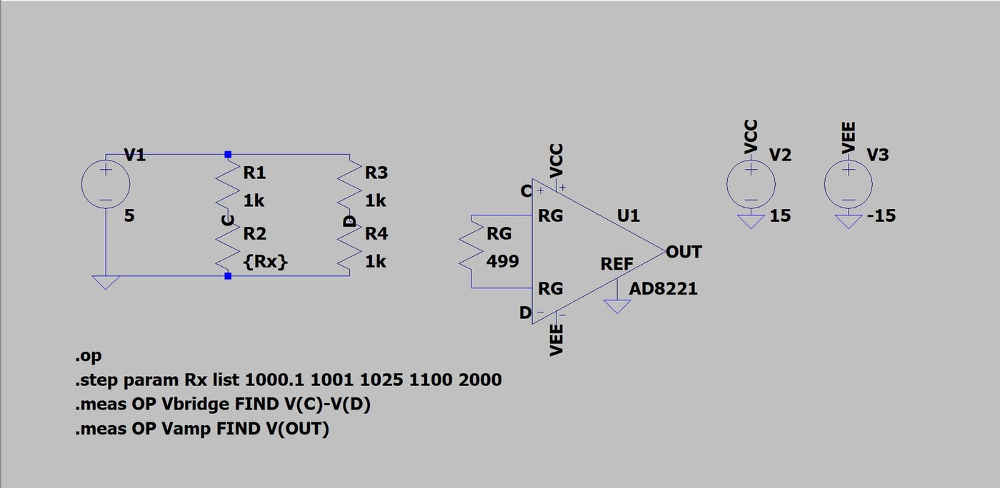
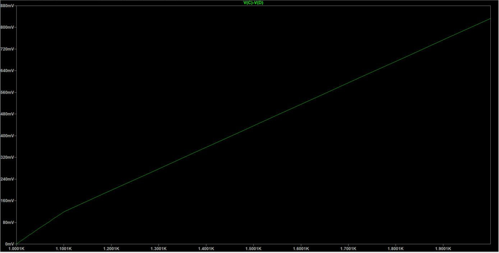
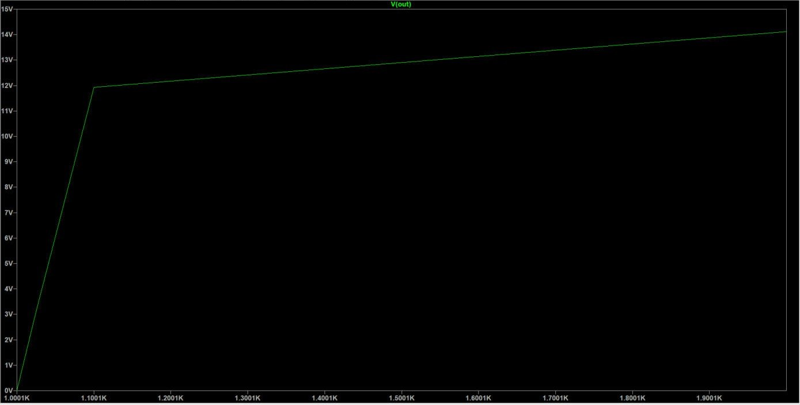
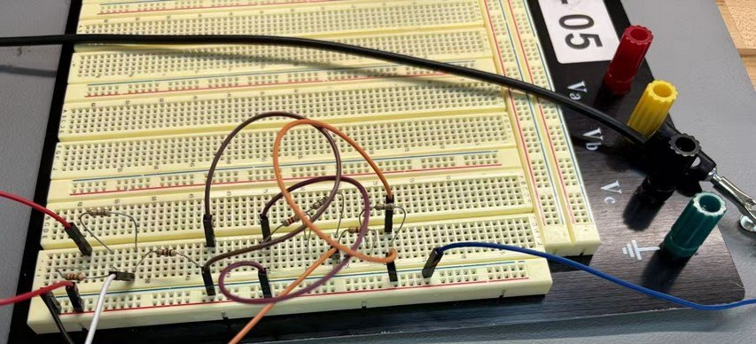
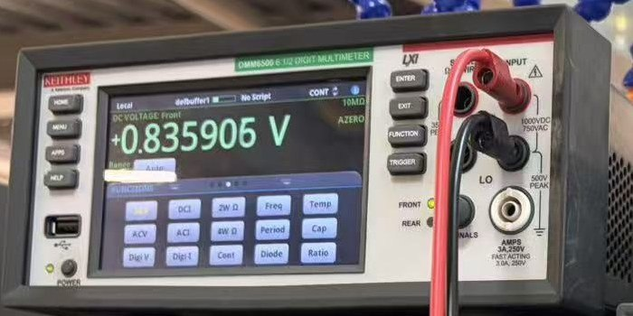

03 / Discovery Project feature
Reading tiny resistance changes with a Wheatstone bridge
For my ECE 1100 Discovery Project I took a classic sensor circuit, worked out the math, made it about 100 times more sensitive in simulation, and built the original bridge on a breadboard to see how real parts compare to the numbers on paper.
- Tools
- LTspice, AD8221 instrumentation amp model, breadboard, Keysight E3630A power supply, Keithley DMM6500 multimeter
- Where
- Simulation on my laptop, breadboard build at the Hive Makerspace
- Built
- Passive bridge on a breadboard. The amplifier stage was simulated in LTspice only.
PROBLEM
Small changes are hard to see
A lot of sensors work by changing resistance. A thermistor changes with temperature, a strain gauge with stretch, and a photoresistor with light. The catch is that the change is often tiny compared to the total resistance.
Say you put a 1 kΩ sensor in a simple voltage divider with 5 V across it. The middle sits at about 2.5 V, and a 1 Ω change only moves it by about 1.25 mV. You’re trying to spot a 1.25 mV change on top of 2.5 V, which is like trying to weigh a feather while it sits on a bowling ball.
A Wheatstone bridge puts two dividers side by side and measures between their middles. If both sides split the voltage the same way, the output is 0 V. When the sensor changes, you see only the change, starting from zero. My goal was to understand why that works, find its weak spots, and design a version that is easier to read.
PROCESS
From hand math to a real breadboard
1. Deriving the output
I found Vout two ways, with voltage division and with nodal analysis (KCL at nodes C and D). Since an ideal voltmeter draws no current, the two methods give the same answer:
Vout = Vc − Vd
= Vs · [ R2/(R1+R2) − R4/(R3+R4) ]
The bridge is balanced (Vout = 0) when R1/R2 = R3/R4. The supply voltage drops out of that condition, so a balanced bridge reads zero even if the supply drifts a little.
2. Researching real uses
I picked three applications that each use the bridge in a different way. Load cells in digital scales use four strain gauges in a full bridge, and a typical one only puts out about 2 mV per volt of supply. Mass airflow sensors in cars put a heated wire in the bridge and use a feedback loop to keep it balanced, so the power needed tells the car how much air is coming in. Blood pressure transducers in hospitals use resistors on a thin silicon diaphragm, and they all share one standard sensitivity (5 µV/V/mmHg) so any sensor works with any monitor. All three have the same problem: the output is tiny, and anything you connect to it can load it down.
3. Making it active
The plain bridge has a small output and acts like a source with about 1 kΩ of resistance behind it. If you connect something that pulls current, like a 10 kΩ input, you lose about 9% of the signal. To fix both problems I added an AD8221 instrumentation amplifier. Two op-amp buffers would fix the loading but have a gain of 1, and a basic difference amp would load the bridge through its input resistors. The in-amp has very high input impedance, amplifies only the difference between C and D, and ignores the 2.5 V that both nodes share. One resistor sets the gain:
G = 1 + 49.4 kΩ / RG RG = 499 Ω → G ≈ 100
The handout suggested a gain of 1000, but on ±15 V supplies the output can only reach about 14 V. With a gain of 1000 it would clip after roughly a 10 Ω change, so I picked 100 to keep most of my test range usable.

4. Simulating both versions
In LTspice I kept R1, R3 and R4 at 1 kΩ, used a 5 V supply, and stepped R2 through 1000.1, 1001, 1025, 1100 and 2000 Ω.
| R2 (Ω) | Hand calc | Passive (sim) | Active (sim) | Active error vs. ideal |
|---|---|---|---|---|
| 1000.1 | 0.125 mV | 0.1247 mV | 20.13 mV | 61.4% |
| 1001 | 1.249 mV | 1.249 mV | 132.7 mV | 6.2% |
| 1025 | 30.86 mV | 30.86 mV | 3.098 V | 0.4% |
| 1100 | 119 mV | 119 mV | 11.93 V | 0.2% |
| 2000 | 833.3 mV | 833.3 mV | 14.11 V | saturated |


5. Building the bridge
At the Hive I built the passive bridge on a breadboard with 1 kΩ resistors for R1, R3 and R4 and swapped different resistors into the R2 spot. A Keysight E3630A supplied 4.99 V, and I measured Vout between C and D with a Keithley DMM6500.


6. Picking a real sensor
For a sensor I chose the GL5528 photoresistor. Its datasheet puts it around 10 to 20 kΩ in normal indoor light and about 1 MΩ in the dark, so I planned the bridge around 10 kΩ legs with a 10 kΩ potentiometer for R4 to balance it in room light. With 5 V, going from bright to dim light should swing the output from about −0.83 V to +0.83 V. That’s already big, so a gain of 100 would saturate right away. A gain of about 2 to 3 (RG of 25 to 49.9 kΩ) fits this sensor much better.
OUTCOME
What the numbers showed
- The math held up. The passive simulation matched my hand calculations within 0.3%.
- The amplifier worked. Sensitivity went from 1.249 mV/Ω to 125.1 mV/Ω, almost exactly the 100× I designed for. V(C)−V(D) didn’t change with the amp connected, so it wasn’t loading the bridge.
- Real parts have limits. The amp added about 7.6 mV of offset at the output. That’s a 61% error for the 0.1 Ω case but under 0.4% once the signal is bigger. Measuring the output at balance and subtracting it, like hitting tare on a scale, would remove it. At 2000 Ω the output saturated at 14.11 V instead of the ideal 83 V.
| R2 (Ω) | Hand calc (Vs = 4.99 V) | Measured | Difference | % error |
|---|---|---|---|---|
| 1100 | 118.810 mV | 180.740 mV | 61.930 mV | 52.1% |
| 1001 | 1.247 mV | 16.244 mV | 14.997 mV | 1202.8% |
| 1025 | 30.802 mV | 55.379 mV | 24.576 mV | 79.8% |
| 2000 | 831.667 mV | 835.906 mV | 4.239 mV | 0.5% |
The breadboard taught me the most. The big 2000 Ω change landed within 0.5% of my calculation, but the small changes were way off. The 1001 Ω case should have read 1.25 mV and read 16.2 mV instead. The most likely reason is resistor tolerance. When I worked it out, 5% resistors can throw a “balanced” bridge off by as much as 250 mV, which completely buries a signal of a few millivolts. A big change rises above that error, which is why the 2000 Ω case still matched. Breadboard contact resistance and long jumper wires add more error on top.
The biggest lessons for me: measure the change instead of the total, match the gain to how much your sensor actually moves, and plan for calibration from the start. A real version would use precision resistors, a trim pot to balance the bridge, and a PCB instead of a breadboard. If I keep going with this, I’d build the photoresistor bridge with a pot, then build the amplifier stage on real hardware with a lower gain.
Sources
- Transcell, “How Load Cells Work.” transcell.com
- US Patent 4,433,576, “Mass Airflow Sensor.” Google Patents
- Merit Sensor, BP Series Pressure Sensor datasheet. PDF
- Analog Devices, “Transducer/Sensor Excitation and Measurement Techniques.” Analog Dialogue
- Texas Instruments, “A Basic Guide to Bridge Measurements.” ti.com
- Analog Devices, AD8221 datasheet. PDF
- GL5528 photoresistor datasheet. PDF
All photos, LTspice screenshots and the schematic drawing on this page are my own.